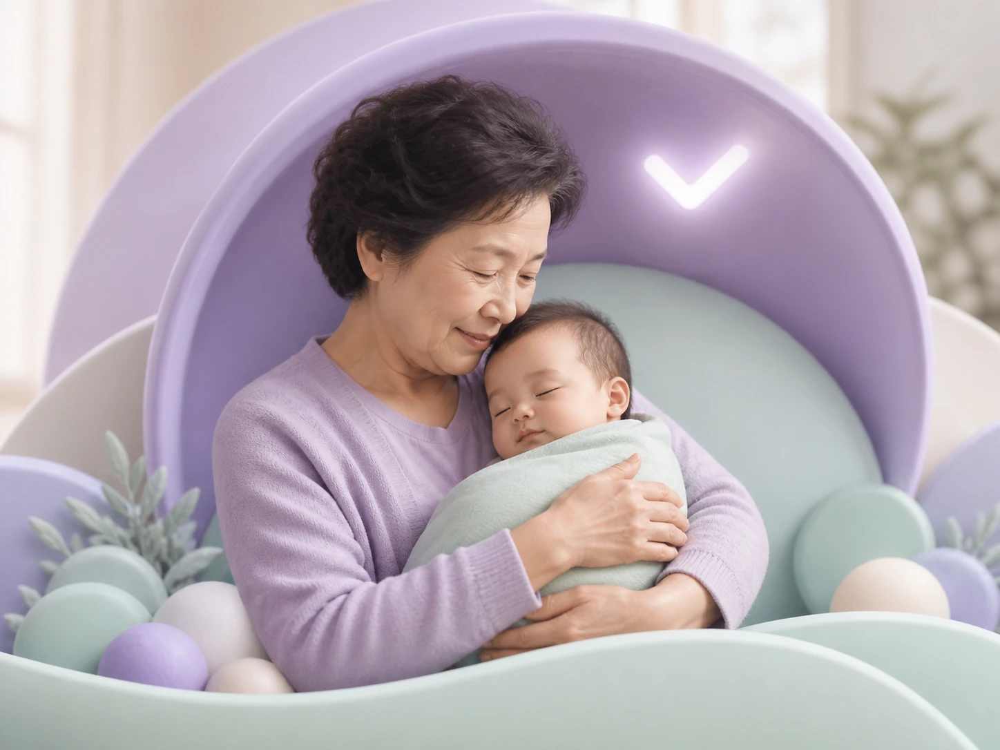

5 秒分析
听懂宝宝的哭声
只需安静听 5 秒，一起分辨宝宝是饿了、困了，还是有些不舒服。
听见小小哭声，也看见你的用心
陪你更安心地理解宝宝此刻的需要
✓安全优先的婴儿照护助手
直接双击 HTML 会被浏览器拦截模块，应用无法完成启动。
打开 CrySense 如果链接打不开，请先在项目目录运行 npm run dev5 秒分析
只需安静听 5 秒，一起分辨宝宝是饿了、困了，还是有些不舒服。
由哭因驱动
合适的灯光、温度和摇床会先形成方案，得到你的允许后才会行动。

✓医疗安全边界
发现异常或无法可靠判断时，我们会停下自动化，陪你先确认宝宝是否安全。
很高兴和你一起照顾禾禾
登录后，家人可以一起保存禾禾的声音记录与照护偏好。
8 月 25 日 星期二
禾禾状态平稳。今天已经记录 3 次哭闹。
宝宝当前状态
已清醒 1 小时 26 分钟，上次喂养在 2 小时前。
随手记一下
每一条小记录，都会让我们更懂禾禾今天的节奏。
今天的片段
更可能是困倦，降低刺激并抱哄后明显缓解。
一家人的照护足迹
禾禾今天经历了什么，以及从记录里发现了什么，都在这里慢慢连起来。
近 7 天的照护记录
不急着下结论，我们一起看看哪些变化值得温柔留意。
本周小结
在已反馈的演示记录里，提前调暗灯光并减少逗弄后，禾禾更容易慢慢平静。
一周变化
两种变化同时出现不代表存在因果，只作为照护回看线索。
一天里的分布
傍晚 18 至 21 时记录较多，可以稍早一点为禾禾降低环境刺激。
已经收到的反馈
抱哄并降低刺激使用 7 次，明显缓解 5 次
较常有效喂养使用 5 次，明显缓解 3 次
有时有效拍嗝或调整姿势使用 4 次，明显缓解 2 次
可继续观察哭因驱动的环境响应
这里展示设备状态，不提供脱离哭声分析的通用控制。
家庭设备权限待确认连接设备时才会请求权限。
婴儿房环境
发现同频的家庭
真实生活里，那些值得交换的小灵感。
我们的照护小家
照顾宝宝，也照顾每一位一起陪伴禾禾的人。
当前宝宝
•••• ••••
共同照护
接班 36 分钟 · 上次记录：12:58 喂养
个性化进度
这些反馈只用于调整照护建议顺序，不会被当作医学诊断依据。
账户与应用
CrySense 陪你理解和记录，但不替代专业医疗判断。
录音前
这些问题不会诊断疾病，只用于判断是否适合继续普通哭声分析。
请相信自己的观察。不确定时，系统会采用更保守的路径。
本流程仅作风险分流，不代表未发现疾病。如情况紧急，请直接联系当地急救服务。
需求分析
手机距离宝宝约 30-50 cm，尽量避开成人说话声。
安全问询已完成未报告明显危险体征，这不代表排除疾病
本次自动带入
轻触按钮开始 5 秒采集
首次使用时才会请求麦克风权限；录音中再次轻触可提前结束。
需要尽快专业评估
系统发现了需要优先关注的信息。
分流依据
现在建议
向专业人员说明哭声变化和伴随状态。
安全分流不能诊断疾病，也不能替代专业评估。
安全层允许继续需求分析未报告危险体征，声音在演示模型范围内
较高置信度
声音节奏与较长清醒时长更接近困倦信号。
判断依据
照护建议
减少说话与逗弄，使用禾禾熟悉的抱哄方式并观察。
需要人工排查
低置信度结果不会生成或执行任何智能家居方案。
推荐环境方案
仅包含与本次哭因直接相关的动作。取消勾选即可移除单项。
部分设备当前不可用可以执行剩余设备，也可以取消整个方案。
点击后仍会出现最终确认 Sheet。未授权不会发送控制命令。
帮助个性化
CrySense 提供照护辅助参考，不替代专业医疗判断。
快捷记录
已记录照护建议
如出现呼吸、肤色或反应异常，请立即停止观察并寻求专业帮助。
最终确认
仅执行你保留的设备动作。CrySense 不会获得通用设备控制权。
仅在你开始检测时采集 5 秒声音。
家庭设备
这里仅管理连接与方案权限，不提供脱离哭声结果的任意控制。
宝宝档案
切换后，首页状态、时间线与个性化建议会同步显示对应宝宝的内容。
创作
宝宝小记
先留给自己也很好。只有你主动选择，内容才会分享给家人或社区。
AI 艺术照相馆
正在检查 MiniMax 图像服务真实生成前会先征得上传同意，不把照片用于本地演示外的用途。
选好照片和风格后，就可以开始创作。
公开前确认
公开内容可能被陌生人看到。CrySense 不会展示宝宝的完整生日、位置或家庭信息。